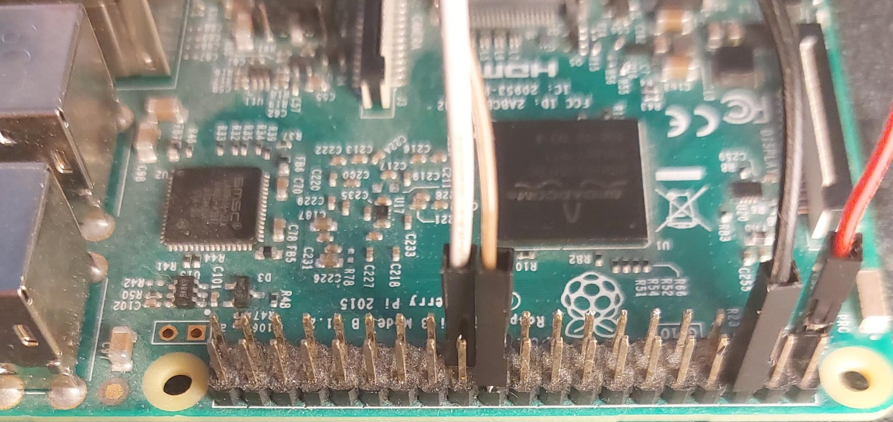
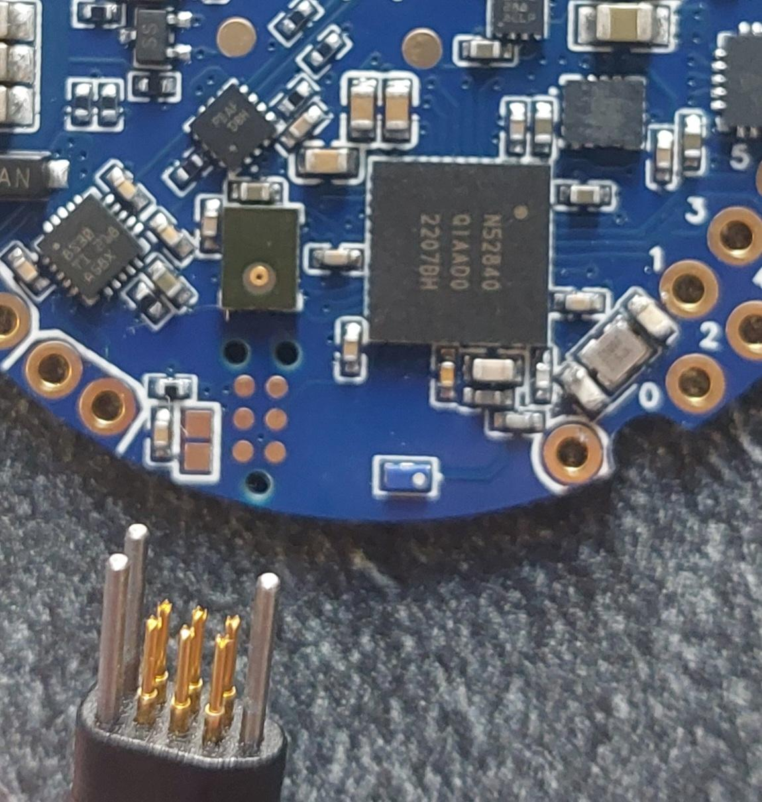

|
Lamp-Da 0.1
A compact lantern project
|
When you receive the integrated circuit, the NRF52840 microcontroler will not have a bootloader.
I used a custom bootloader, derived from adafruit, that allow the user to program the microcontroler via USB, and update the bootloader itself.
When pluging the usb cable, is the board is detected, a bootloader is already flashed.
It can be updated by copying the update-lampda_nrf52840_bootloader file into the board. The board should appears as a usb drive, with the name LMBDBOOT.
If the board do not appear on the usb board (but is detected on the peripherals), it may be running a program. The program as a Command Line Interface, that can put the board in update mode. Just connect to the board with a serial connection (command make monitor from this repo will open the connection) and send the command DFU.
If the board is not detected after being pluged in, and do not appear as a peripheral, and cant be connected with serial, the board may be missing a bootloader. Follow the next section.
To flash the bootloader for the first time, you must use a computer with GPIOs (I'm using a raspberry Pi) with openocd, or a JTAG connector.
You need to get the lampda_nrf52840_bootloader, next to this file.

Wire correspondance:
I use a TC2030 port, programable with a TC2030-MCP-NL cable. The cable is expensive, but it is only useful once.

You can run openocd next to the openocd.cfg to flash the board.
The process should end with no errors, and openocd should close itself.